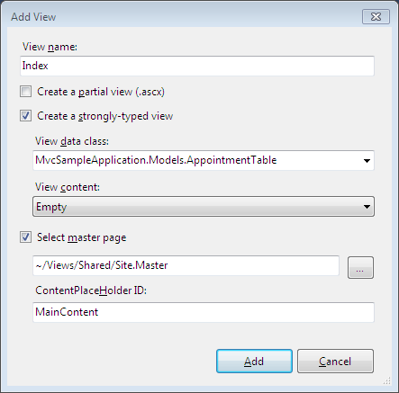
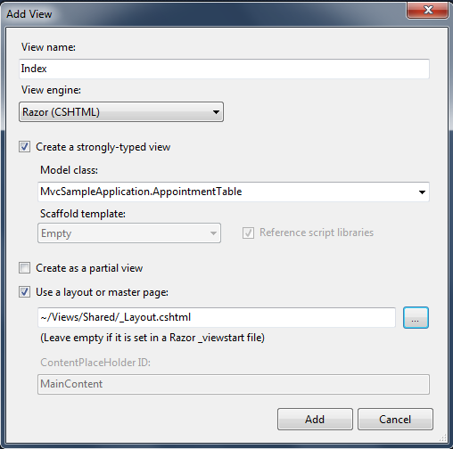
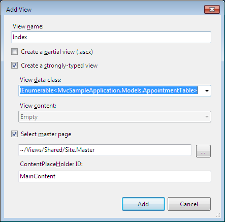
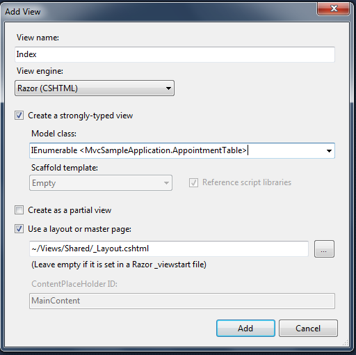

To create strongly typed View:
1. Right-click the View->Home folder.
2. Delete the existing Index.aspx (To make it remain as a default action).
3. Click Add, and then select View.
4. Name the view Index.
5. Select the box that says create a strongly-typed view, and on the drop down menu, select your model. In this case it is “MvcSampleApplication.Models.AppointmentTable”.

Figure 149: Strongly typed – Index.aspx

Figure 150: Strongly typed – Index.cshtml
 Note: The View Data class
drop-down list will be empty until you successfully build your application. It
is a good idea to select the menu option build, build solution before opening
the Add New dialog.
Note: The View Data class
drop-down list will be empty until you successfully build your application. It
is a good idea to select the menu option build, build solution before opening
the Add New dialog.
6. In a View Data Class, make the model IEnumerable collections as shown below:

Figure 151: View Data classes as IEumerable collection(Index.aspx)

Figure 152: View Data classes as IEumerable collection(Index.cshtml)